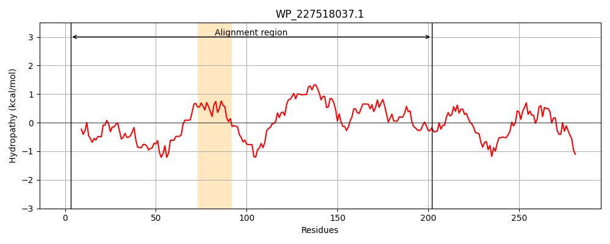
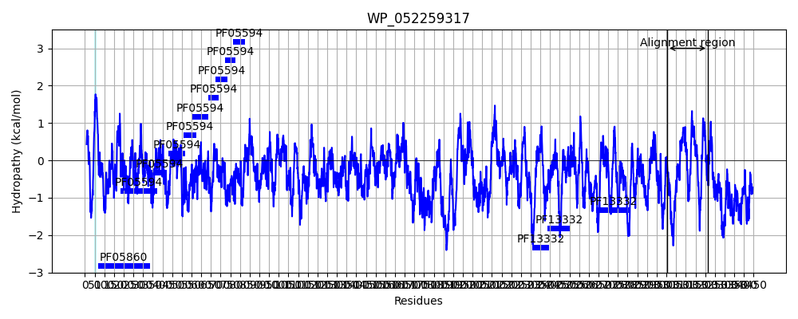
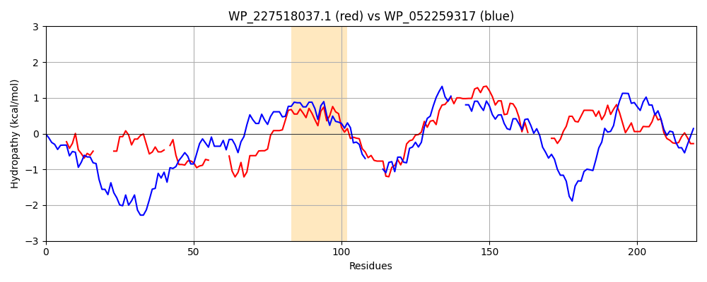

Hit Accession: WP_052259317
Hit TCID: 1.C.75.1.2
Hit Description: gnl|BL_ORD_ID|21195 gnl|TC-DB|WP_052259317|1.C.75.1.2 hemagglutinin repeat-containing protein [Pantoea agglomerans]
Mach Len: 220
e:0.000000
Query TMS Count : 1
Hit TMS Count: 1
TMS-Overlap Score: 0.000000
Predicted Substrates:CHEBI:25367;molecule
BLAST Alignment:
Score: 179 , Bit scores: 73 bits, E-value: 1.6e-14, Alignment length: 220, Percentage identity: 30
Query: 3 DVLVTQGKLNAQAAQSD------PAARAAARAKLVAGGNGS-PSEEQISAQVSRTA------TADYDTGGKYQKVAQAVTAAMQGLAGGNLAQAASGAVSPYVAEIIHRQTPDCYTDCKGKLAEDVAEGNAVVSAHLADTVGLGILPKGALVTAAISGGANTAI-------QYATTSEVNYIDALIATWVGAATSKTGWLGTVGWNAAGGAISSYLKGDN 202
D+ TQG++ A A ++ P + A A+ G P+ I+ QV +T TGG Q+ A TAA+QGLAGGN+AQA SGA +PY+AE IH+ T KG ++V A + AH +G + A A++G + A+ Y + + T T G G V ++ GGA++ G N
Sbjct: 3004 DIARTQGEIAATRAATEKMKNISPDQKKDAEAQWRKANPGQEPTAADITGQVYQTLYNREMLAGGMGTGGSVQQGISAATAAIQGLAGGNIAQAVSGAAAPYLAEQIHK-----LTTTKGPDGKEVVNVQANLIAHAV----VGAVTSYASGNPALAGASGAAMGEYIAQQMYPGVKREDLSEEQRQTISALGTLAAGLAGGVAGDSTGGAVAGAQAGKN 3214 | Protein Hydropathy Plots: |
|---|
|  |  |
Pairwise Alignment-Hydropathy Plot:
|
|---|
|  |